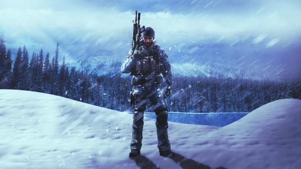
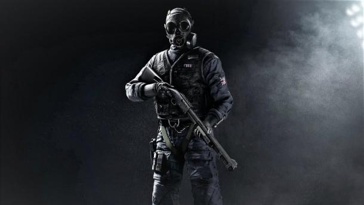
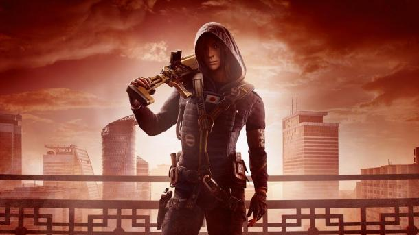

ЧТО ТАКОЕ RAINBOW SIX ОСАДА?
Встречайте лучший тактический шутер на PC, PS4 и Xbox One. Выбирайте своих оперативников и участвуйте в напряженных боях 5х5.
Геймплей
В основе игрового процесса игры - напряженные асимметричные бои между штурмотрядом и защитниками в условиях ограниченного пространства. Локации в игре состоят из многоуровнего объекта (здания или, например, самолёта), внутри которого находятся защитники, и пространства вокруг него, где начинают штурмующие.
Разрушение стоит во главе игровой механики игры. Окружающие объекты выполнены максимально реалистично, степень повреждения зависит от калибра используемых игроками пуль или от совокупной мощности заложенной взрывчатки. Стены (которые не являются несущими) можно разрушать, создавая новые огневые позиции, в полу и потолке можно сделать брешь и использовать ее как новую точку доступа. Оптимальное использование возможностей разрушения зачастую становится гарантией победы. Защитники могут ограничить возможности атакующих к разрушению, используя комплекты для усиления разрушаемых стен и устройства некоторых оперативников.
Основной режим игры — многопользовательский, обычный или рейтинговый. За игры в последнем режиме игроку присваивается определённое звание, а такие параметры как соотношение убийств/смертей и побед/поражений заносятся в его профиль, отображаемый в игре. Бои происходят в формате 5х5, где против друг друга сражаются оперативники спецподразделений из команд атаки и защиты.
В игре имеются так называемые «Операции» — набор из 10 коротких однопользовательских миссий, которые обучают игрока основам игры, а также знакомят с некоторыми оперативниками.
Также в игру вернулся знакомый для фанатов серии Rainbow Six режим «Антитеррор». В него можно играть одному или с друзьями (до 5 человек в группе). Задача игроков — выполнить задание (оборона или атака). Им противостоят противники под управлением искусственного интеллекта, которых на карте больше, чем самих игроков. Игра использует произвольные сочетания режимов, карт, времени суток, а также заданий, мест проведения операций и настроек укреплений, чтобы каждый раз создавать для игроков уникальные условия.
Сетевые режимы
- "Заложник": штурмотряд должен обнаружить и вывести заложника из здания. Защитники должны помешать этому, устанавливая баррикады и ловушки.
- "Захват позиции": штурмотряд должен обнаружить комнату, в которой находится химконтейнер и удерживать ее, не допуская в неё противника, оставаясь внутри на протяжении 10 секунд.
- "Заряд": штурмотряд находит один из двух зарядов и приводит в действие деактиватор, расположить который нужно в этом же помещении. Штурмотряд выигрывает раунд, если им удалось обезвредить заряд или уничтожить команду противника. Этот режим единственный, который используется для киберспортивных соревнований.
Самые популярные оперативники
- 

- 
- 